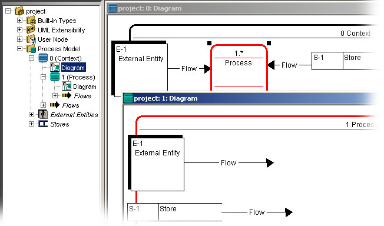

Decomposing processes

A process may be decomposed to describe its internal workflow by subprocesses.
The first diagram of a model, the one corresponding to the most global view of the
system or organization being represented, is called by default the context diagram.
It is also frequently called the “global level”.
The diagram representing the decomposition of a process is identified by the name
and the number of the decomposed process. Frequently, by conventional use, we
say that a diagram of a decomposed process has a frame. Outside the frame, or
overlaying it, we find all the components belonging to other diagrams. Hence, the
diagrams make up a tree, or a hierarchy, whose root is the 'Context' diagram.
All diagrams of a lower level issuing from an exploded process are said to be descending
diagrams, hence the expression: a diagram and its descendants.
To decompose a process :
- Choose the process that you want to decompose.
- In the Process Modeling Creation toolbar , select the Decomposition tool .
- In the diagram, click in the process.
This operation will automatically add a diagram with the flows and the processes linked to the decomposed process. Now you can add some subprocesses.
When a process is decomposed, a ' * ' appear after its identifier.
